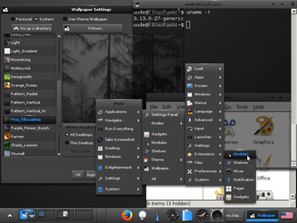
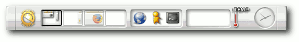
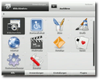
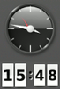
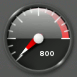
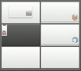
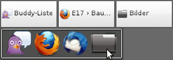
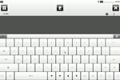

E17
Dieser Artikel wurde für die folgenden Ubuntu-Versionen getestet:
Ubuntu 16.04 Xenial Xerus
Ubuntu 14.04 Trusty Tahr
Zum Verständnis dieses Artikels sind folgende Seiten hilfreich:
|  |
| Enlightenment E17 in Ubuntu 14.04 |
E17 ist ein sehr schneller Fenstermanager und der komplett neu geschriebene Nachfolger des legendären E16. Der Fenstermanager der Desktop-Umgebung Enlightenment ist in hohem Maße konfigurierbar und verfügt über jede Menge grafische Effekte (Eyecandy), ohne an Geschwindigkeit einzubüßen.
E17 wurde seit Dezember 2000 entwickelt und setzt auf den EFL (Enlightenment Foundation Libraries) auf. Im Dezember 2012 wurde die finale Version veröffentlicht.
Verschiedene Distributionen  verwenden Enlightenment bzw. E17 als Standard-Desktopumgebung, beispielsweise das inoffizielle Ubuntu-Derivat Bodhi Linux mit dem e17-Fork Mokscha.
verwenden Enlightenment bzw. E17 als Standard-Desktopumgebung, beispielsweise das inoffizielle Ubuntu-Derivat Bodhi Linux mit dem e17-Fork Mokscha.
Installation¶
Die Installation [1] erfolgt jeweils über das folgende Metapaket:
e17 (universe)
 mit apturl
mit apturl
Paketliste zum Kopieren:
sudo apt-get install e17
sudo aptitude install e17
Bedienung¶
Beim ersten Start von Enlightenment kann man Sprache, Autostartanwendungen und Profil (Desktop, Laptop, Touchscreen usw.) auswählen. Diese Einstellungen lassen sich später wieder ändern.
In der Voreinstellung kann man mit
Strg +
Alt +
← bzw.
→ oder durch Bewegen der Maus an den Bildschirmrand die virtuelle Arbeitsfläche wechseln.
Strg +
Alt +
M oder ein Linksklick auf die Arbeitsfläche öffnet das Hauptmenü. Ein Rechtsklick  hingegen öffnet das Favoritenmenü.
hingegen öffnet das Favoritenmenü.
Einstellungskonsole¶
Enlightenment ist nahezu vollständig grafisch konfigurierbar. Alle Einstellungen können in der Einstellungskonsole getätigt werden, die im Hauptmenü unter "Einstellungen → Einstellungskonsole" zu finden ist. Weitere Informationen finden sich unter Konfiguration.
Enlightenment File Manager EFM¶
Enlightenment besitzt seinen eigenen Dateimanager. Dieser ist durch Module erweiterbar und unterstützt Reiter via Strg + T . Derzeit existieren folgende 3 Erweiterungen:
EFM Operation Info
EFM Navigation - Erweitert EFM um Vor-, Zurück-, Übergeordnet- und Favoriten-Schaltflächen
EFM Path - erweitert EFM um eine Pfadleiste
Um Dateien zu suchen, braucht man einfach nur die ersten Buchstaben einzutippen. EFM bietet verschiedene "Ziehen & Ablegen"-Modi an, je nachdem, welche Taste man beim Ablegen gedrückt hält:
Strg Dateien an diesen Ort kopieren
Alt Nachfragen, was getan werden soll
⇧ "Film-Dateien-Modus" (Standard)
Man kann auch einen anderen Dateimanager als Standardanwendung einstellen.
Modulablage / Panel¶
Das Panel ist in Enlightenment Bestandteil einer Modulablage (shelf). Wobei der Begriff "Panel" irreführend ist, denn mehrere Modulablagen können zum einen rund um den Desktop an den Rändern plaziert werden und dienen andererseits praktisch als Container für Module und Helfer (gadgets). Welche und wie viele Module in Enlightenment zur Verfügung stehen, hängt davon ab, welche Version von Ubuntu oder welche Paketquelle man benutzt.
Innerhalb einer Modulablage lassen sich alle verfügbaren Elemente frei gruppieren. Neben dem Anwendungsstarter IBar, einem Arbeitsflächenwähler und dem Fensterwähler IBox lassen sich zusätzlich kleine Helfer wie eine Uhr oder das Hauptmenü anzeigen. Mit einem Rechtsklick auf eine Modulablage kann auf die "Einstellungen" zum Verhalten des und auf die "Inhalte" zum Platzieren von Helfern zugegriffen werden.

Engage lautet der Name eines Panels von E17, das dem Dock von Mac OS X nachempfunden ist.
Module und Helfer¶
Enlightenment ist modular aufgebaut. Dadurch können einzelne Module aktiviert oder deaktiviert werden. Jedes Modul stellt eine bestimmte Funktion bereit. Einige Module lassen sich als Helfer auf der Arbeitsfläche oder einer Modulablage platzieren (z.B. Uhr, Arbeitsflächenwähler). Module können in der Einstellungskonsole unter "Erweiterungen" de-/aktiviert werden. Durch einen Rechtsklick auf einen Helfer lassen sich sowohl Platzierung als auch Ausdehnung des Helfers verändern. Welche Module verwendet werden können, hängt davon ab, aus welcher Quelle man Enlightenment installiert hat. Enlightenment bietet so viele davon, dass hier nur die wichtigsten erwähnt werden.
|  |
| Everything |
|  |
| Uhr |
|  |
| CpuFreq |
|  |
| Arbeitsflächenumschalter |
|  |
| Fensterleisten Tasks und IBar/IBox |
|  |
| Touchscreen-Oberfläche Illume |
Everything¶
Everything ist ein flexibler Starter ähnlich wie Gnome Do und soll, wie der Name bereits ahnen lässt, möglichst alles können. So kann man mit Everything suchen, durch Verzeichnisse navigieren, Bilder anzeigen, einfache Rechenaufgaben lösen, die Rechtschreibung prüfen und natürlich Anwendungen starten und Befehle ausführen.
Everything lässt sich entweder über das Tastenkürzel Alt + Esc oder per "Hauptmenü → Starte Everything" aufrufen. Danach beginnt man zu tippen, was man tun möchte, oder man klickt sich einfach durch. Je öfter man Everything benutzt, desto mehr passt es sich dem Verhalten des Nutzers an. Öfter verwendete Anwendungen werden also schneller gefunden. Am oberen und unteren Rand befinden sich Reiter. Wechselt man in den oberen Reiter "Aktionen", kann man auswählen, was mit dem Suchergebnis getan werden soll (z.B. Ausführen oder Bearbeiten). Am unteren Rand kann man zwischen Anwendungen, offenen Fenstern und dem Ausführen von Befehlen (Exebuf) wählen.
Fensterleiste¶
Es gibt mehrere Möglichkeiten, die Übersicht über geöffnete Fenster zu behalten. Enlightenment bietet dafür gleich 2 Helfer an. Beide werden für gewöhnlich auf einer Modulablage platziert. Tasks bietet einen klassischen Fensterwähler (Taskbar). IBox zeigt geöffnete Fenster als Symbole, ähnlich wie ein Dock. Je nach Version zeigt IBox aber nur minimierte Fenster an. Alternativ dazu kann man wie gewohnt mit Alt + Tab ⇆ durch offene Anwendungen wechseln.
Systemleiste/Infobereich¶
Dieses Modul stellt eine Systemablage für eine Modulablage bereit. Hier werden zum Beispiel der Netzwerkmanager, Skype oder Pidgin angezeigt.
Illume¶
Illume ist die Enlightenment-Oberfläche für Netbooks und alle Geräte mit sehr kleinen Bildschirmen oder Touchscreens. Es lässt sich intuitiv bedienen. Illume aus den offiziellen Paketquellen hat noch viele Schwachstellen, die in neueren Versionen zum Großteil bereits ausgebessert wurden. Um Illume zu verwenden, muss man das Profil wechseln.
Hauptmenü und Favoritenmenü¶
Das E17-Hauptmenü greift auf die gleichen Menüeinträge wie KDE und GNOME zurück. Neue Einträge sind also direkt nach der Installation im Hauptmenü über "Anwendungen" verfügbar. Das Favoritenmenü ist in der Konfigurationskonsole über den Punkt "Menüs → Favoritenmenü" konfigurierbar. Zudem kann man neue Favoriten über einen Klick  auf das Anwendungssymbol in einem Fenster hinzufügen.
auf das Anwendungssymbol in einem Fenster hinzufügen.
Konfiguration¶
Seine Geschwindigkeit erreicht Enlightenment unter anderen durch den Ansatz, dass die Konfiguration Linux-untypisch nicht über editierbare Textdateien erfolgt. Diese Situation wird aber dadurch entschärft, dass praktisch überall grafische Dialoge zur Verfügung stehen, um die unzähligen Einstellungen vornehmen zu können.
Um Enlightenment zu konfigurieren, kommen sowohl die Einstellungskonsole als auch das Kommandozeilenwerkzeug Remote zum Einsatz.
Einstellungswerkzeug Remote¶
Alternativ zum grafischen Konfigurationswerkzeug gibt es einen Universalkonfigurationsbefehl für das Terminal [2] :
enlightenment_remote
mit dem sich fast alles einstellen lässt.
Profil wechseln¶
Enlightenment bietet verschiedene Profile. Die Profile sind für unterschiedliche Geräte angepasst. Es gibt ein Profil für Normale Arbeitsplatzrechner und jeweils eins für Notebooks, Netbooks, Touchscreens, schwache Hardware oder besonders viele Effekte. Die Profile lassen sich ändern unter:
"Einstellungskonsole → Einstellungen → Profil"
Tastaturkürzel¶
Shortcuts können nach Belieben im Punkt "Eingabe → Tastenbelegungen" in der Einstellungskonsole verändert und erstellt werden.
Programmspezifische Einstellungen¶
E17 hat eine Erinnerungsfunktion. Mit einem Rechtsklick auf die Titelleiste eines Fensters und dem Auswählen von "Mehr -> Erinnern" können sämtliche Fensterattribute gespeichert werden.
Standardanwendungen ändern¶
Die Standardprogramme für bestimmte Aufgaben lassen sich einfach über die Einstellungskonsole unter "Anwendungen → Standardanwendungen" einstellen.
Startprogramme¶
Zusätzlich zur Erinnerungsfunktion können Programme auch per "Programme → Autostartanwendungen" beim Start geladen werden.
Favoriten manuell bearbeiten¶
Um das "Favoritenmenü" den eigenen Wünschen anzupassen (z.B. "Untermenüs" anlegen), muss die Datei favorite.menu zur Zeit noch manuell bearbeitet werden [3]. Diese findet man in folgendem Verzeichnis ~/.e/e/applications/menu/. Um ein Untermenü anzulegen, kann in der Sektion <Layout> folgende Zeile je nach Wunsch platziert werden:
<Menuname>frei_wählbar</Menuname>
}
Nun muss am Ende der '''favorite.menu'''-Datei (nach der Sektion `<Include>`) ein Eintrag vorgenommen werden:
{{{
<Menu>
<Name>frei_wählbar</Name>
<MergeFile>frei_wählbar.menu</MergeFile> # derselbe Name wie in der Sektion <Layout>
</Menu>Eine favorite.menu-Datei könnte dann wie folgt aussehen:
1 2 3 4 5 6 7 8 9 10 11 12 13 14 15 16 17 18 19 20 21 22 23 | <?xml version="1.0"?> <!DOCTYPE Menu PUBLIC "-//freedesktop//DTD Menu 1.0//EN" "http://standards.freedesktop.org/menu-spec/menu-1.0.dtd"> <Menu> <Name>(null)</Name> <DefaultAppDirs/> <DefaultDirectoryDirs/> <Layout> <Menuname>frei_wählbar</Menuname> <Filename>epiphany.desktop</Filename> <Filename>thunderbird.desktop</Filename> <Filename>exaile.desktop</Filename> </Layout> <Include> <Filename>epiphany.desktop</Filename> <Filename>thunderbird.desktop</Filename> <Filename>exaile.desktop</Filename> </Include> <Menu> <Name>frei_wählbar</Name> <MergeFile>frei_wählbar.menu</MergeFile> </Menu> </Menu> |
Nun muss noch eine .menu-Datei mit dem selben Namen (hier also: frei_wählbar.menu) mit dem eigentlichen Untermenü angelegt werden. Diese muss ebenso wie die favorite.menu-Datei im Verzeichnis ~/.e/e/applications/menu/ gespeichert werden. Passend zu obigen Beispiel folglich:
1 2 3 4 5 6 7 8 9 10 11 12 13 14 15 16 17 18 | <?xml version="1.0"?> <!DOCTYPE Menu PUBLIC "-//freedesktop//DTD Menu 1.0//EN" "http://standards.freedesktop.org/menu-spec/menu-1.0.dtd"> <Menu> <Name>frei_wählbar</Name> <DefaultAppDirs/> <DefaultDirectoryDirs/> <Layout> <Filename>gedit.desktop</Filename> <Filename>thunar.desktop</Filename> <Filename>pidgin.desktop</Filename> </Layout> <Include> <Filename>gedit.desktop</Filename> <Filename>thunar.desktop</Filename> <Filename>pidgin.desktop</Filename> </Include> </Menu> |
Sobald diese Datei abgespeichert wurde, erscheint im "Favoritenmenü" das gewünschte Unterverzeichnis. Optional kann mit dem Eintrag <Separator/> in der Sektion <Layout> der favorite.menu-Datei ein Trennstrich eingefügt werden, um das Untermenü von den übrigen Einträgen abzuheben.
Aussehen¶
Sämtliche Einstellungen lassen sich im Konfigurationsmenü im Punkt "Aussehen" tätigen. Man beachte:
Designs werden im Verzeichnis ~/.e/e/themes/ gespeichert
Hintergrundbilder speichert man in ~/.e/e/backgrounds/
Beide können jedoch auch im jeweiligen Dialog "Importiert" bzw. als "Bild" ausgewählt werden.
Designs anpassen¶
Designs und Hintergrundbilder werden über die hauseigene "Engine" edje gesteuert. Es gibt also für jedes Design und jedes Hintergrundbild edj-Dateien. Auf exchange.enlightenment.org kann man bereits auf eine beachtliche Menge Designs und Hintergrundbilder zurückgreifen. Diese kann man entpacken, anpassen und wieder zusammenfügen. Dafür muss das Paket
libedje-bin
mit apturl
Paketliste zum Kopieren:
sudo apt-get install libedje-bin
sudo aptitude install libedje-bin
installiert sein. Mit
edje_decc
im Terminal [2] kann man vorhandene edj-Dateien dekompilieren, sie dann verändern und mit dem erzeugten Skript wieder kompilieren. Die dabei entpackten edc-Dateien sind die Konfigurationsdateien.
Es ist auch möglich, installierte Designs zu mischen. Dazu wählt man "Thema -> Erweitert", dort links den zu ändernden Punkt (z.B. "tclock") und in der Mitte das gewünschte Design. Nach einem Klick auf "Zuweisen" links unter der Auswahl muss die Änderung nur noch bestätigt werden.
Netzwerkverbindung¶
Um unter Enlightenment die Verbindung mit einem Netzwerk herzustellen, wird oft ConnMan verwendet. Man kann jedoch auch einen beliebigen Netzwerk-Verwalter verwenden.
ConnMan¶
Connman lässt sich einfach aus den offiziellen Paketquellen installieren. Um das Programm zu verwenden, können die Helfer "Internetverbindungen" und "Mobile Verbindungen" einer Modulablage hinzugefügt werden.
connman (universe)
mit apturl
Paketliste zum Kopieren:
sudo apt-get install connman
sudo aptitude install connman
Achtung!
Durch die Installation von ConnMan wird der Network-Manager entfernt.
NetworkManager¶
Der NetworkManager wird unter Ubuntu standardmäßig für Netzwerkverbindungen verwendet und ist bereits vorinstalliert. Um ihn mit Enlightenment zu verwenden, empfiehlt es sich, einen Infobereich zur einer Modulablage hinzuzufügen.
Zuerst legt man dazu einen Starter "NetworkManager Applet" mit dem Befehl nm-applet unter "Einstellungskonsole → Programme → Neue Anwendung" an.
Nun muss "NetworkManager Applet" zu den Autostartanwendungen hinzugefügt werden: "Einstellungskonsole → Programme → Autostartanwendungen → Networkmanager Applet"
Bei neueren Versionen von Enlightenment braucht man keinen neuen Starter mehr anzulegen, dort geht man wie folgt vor: "Einstellungskonsole → Programme → Autostartanwendungen → Reiter: System → Netzwerk"
Bei der nächsten Anmeldung erscheint das NetworkManager Applet im Infobereich.
Problembehebung¶
E17 und GTK+2/GTK+3¶
Möchte man E17 als Fenstermanager nutzen und gleichzeitig die GTK+-Programme ihren gewohnten "Look" beibehalten lassen, so muss man das GTK+ Design wechseln. Das Enligthenment PPA bietet ein Paket namens detorious-theme, das es erlaubt, GTK+ Anwendungen mit dem Enlightenment Standard-Design zu verwenden.
Enlightenment zurücksetzen¶
Sollte das aus irgendeinem Grund notwendig sein, so braucht man nur den Ordner ~/.e löschen. Alle Einstellungen gehen dabei verloren. Alternativ dazu kann man den Ordner umbenennen.
Sound¶
Der Sound funktioniert normalerweise einwandfrei, wobei viele Programme einen Soundserver benutzen, da sie nicht direkt auf die Soundkarte zugreifen. Bei einer Minimalinstallation wird jedoch kein Soundserver installiert. Hierfür reichen bereits die Pakete:
alsa-utils
asoundconf-gtk (für die Auswahl der Soundkarte)
mit apturl
Paketliste zum Kopieren:
sudo apt-get install alsa-utils asoundconf-gtk
sudo aptitude install alsa-utils asoundconf-gtk
Hinweis:
Die Lautstärke ist im Mixer oft auf "stumm" eingestellt. Dazu siehe auch Alsamixer und Sound Problembehebung.
IBar und IBox zeigen keine Elemente an¶
Sollte einer dieser Helfer keine Starter oder minimierte Anwendungen anzeigen, sollte man die Ausdehnung des Helfers vergrößern.
Links¶
e17-stuff.org
- Designs, Eyecandy und vieles andere mehrGadgets, Modules, and Shelves
- Bodhi-WikiArtikelserie im PCLinuxOS Magazin
e17: An Overview
- Ausgabe 12/2010e17: System Panel, Part 1
- Ausgabe 01/2011e17: System Panel, Part 2
- Ausgabe 02/2011e17: System Panel, Part 3
- Ausgabe 03/2011
Terminology: More Than A Terminal Emulator
- Blogbeitrag, 04/2013. Übersicht und eine Installationsanleitung, um den E17-Terminalemulator Terminology aus Fremdquellen nachzurüsten. Dieser ist erst ab Ubuntu 15.04 in den offiziellen Paketquellen enthalten.Enlightenment
 Übersichtsartikel
Übersichtsartikel
- Erstellt mit Inyoka
-
 2004 – 2017 ubuntuusers.de • Einige Rechte vorbehalten
2004 – 2017 ubuntuusers.de • Einige Rechte vorbehalten
Lizenz • Kontakt • Datenschutz • Impressum • Serverstatus -
Serverhousing gespendet von